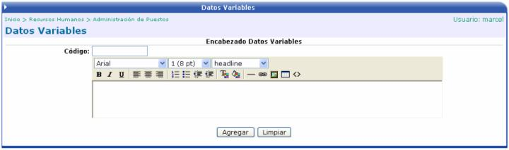
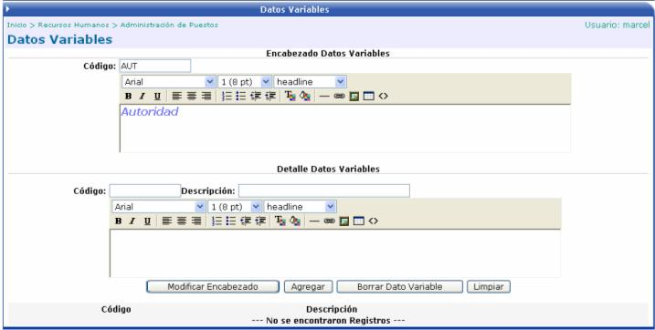

En esta opción de datos variables se puede crear información adicional que el puesto requiera, por ejemplo describir las relaciones internas y externas que debe de tener la persona que participe por ese puesto, o detallar el grado de autoridad que debe de tener en la toma de decisiones dentro de la empresa, etc.
Para esto se debe de crear un encabezado, con un código y un título o etiqueta. A este título se le puede dar formato (negrita, cursiva, alineación, tablas, imágenes, etc.).

Luego se presiona el botón de  para salvar la información del encabezado y proceder a crear
el detalle del mismo. Se crea un código y una descripción y luego se explica
o se detalla dicha descripción.
para salvar la información del encabezado y proceder a crear
el detalle del mismo. Se crea un código y una descripción y luego se explica
o se detalla dicha descripción.
